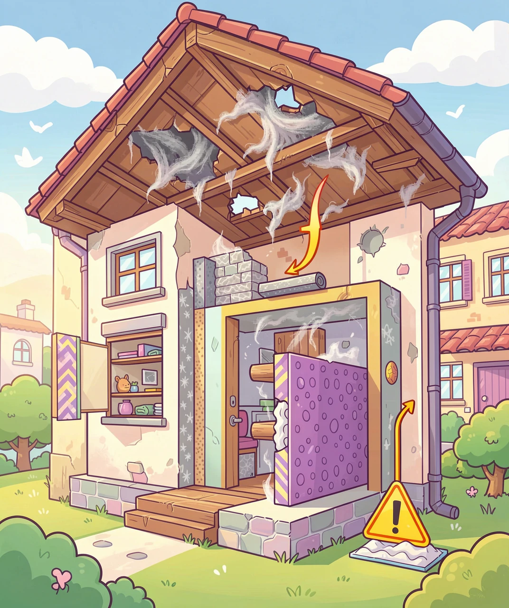
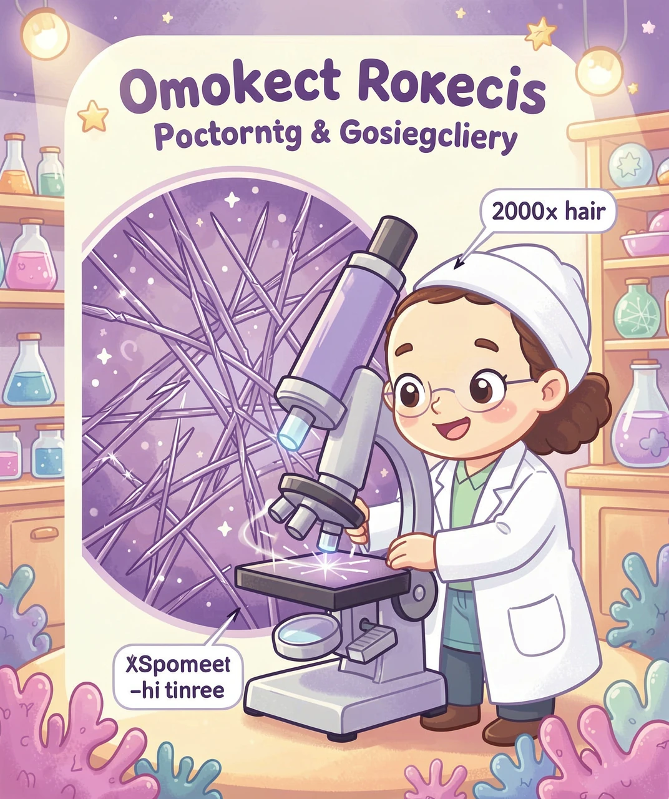
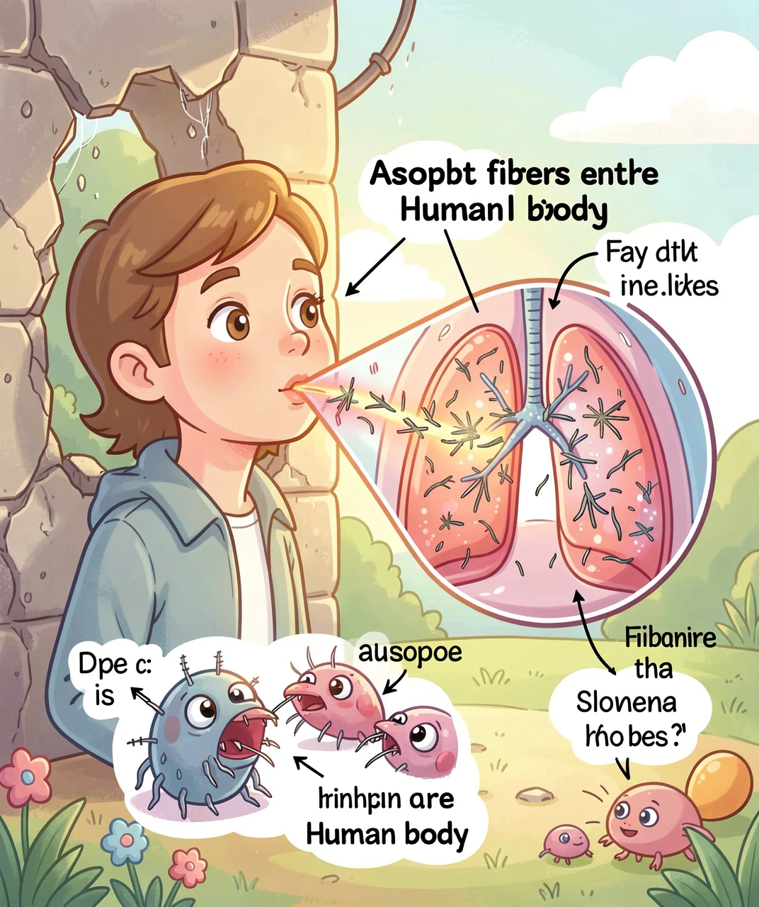
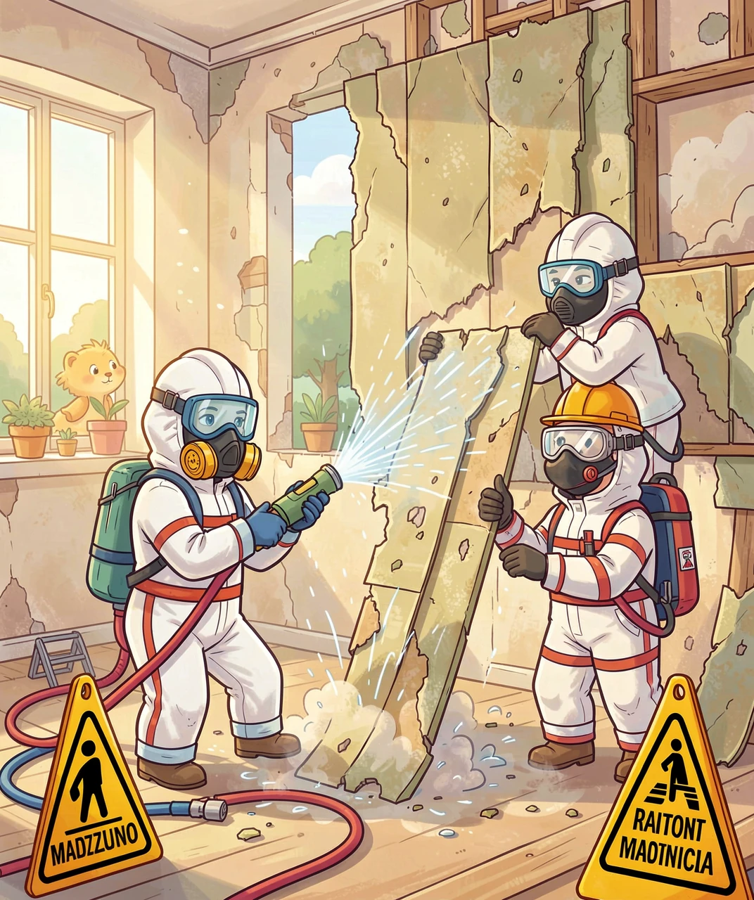

你的教室里，天花板上面可能藏着一种危险物质——它看起来像棉花，比头发丝还细，却有可能会伤人。它就是石棉。

石棉不是人工合成的化学材料，它是天然矿物——一种从地底下挖出来的纤维状硅酸盐矿石。
把石棉矿石放在显微镜下看，你会看到无数根极细极细的针状纤维，一根石棉纤维的直径只有头发丝的两千分之一。更神奇的是，这些纤维可以像棉花一样被纺成线、织成布，但它们不怕火烧！
| 特性 | 说明 |
|---|---|
| 🔥 防火 | 在1000°C高温下也不燃烧 |
| ⚡ 绝缘 | 不导电，是优良的电绝缘材料 |
| 🧵 可纺 | 能像棉花一样纺线织布 |
| 💪 高強度 | 抗拉强度超过钢丝 |
| 🧪 耐腐蚀 | 酸碱都拿它没办法 |
| 💰 便宜 | 从矿石中提取，成本极低 |
正因为这些"超能力"，从20世纪初开始，石棉被大量用在建筑材料中——天花板、墙壁、水管、地砖、刹车片……几乎无处不在。

石棉的问题不在于它有毒（它本身没有化学毒性），而在于它的物理形状——那些极细极尖的针状纤维。
| 疾病 | 说明 | 潜伏期 |
|---|---|---|
| 🫁 石棉肺 | 肺部组织纤维化，变硬失去弹性，呼吸越来越困难 | 10-20年 |
| 🩺 肺癌 | 石棉纤维诱发肺部细胞癌变，吸烟者风险倍增 | 15-35年 |
| 💔 间皮瘤 | 胸膜/腹膜恶性肿瘤，几乎只由石棉引起，极难治疗 | 20-50年 |
| 🫧 胸膜斑 | 胸膜上长出钙化斑块，呼吸困难、胸痛 | 20-40年 |

石棉曾被用在超过3000种产品中！虽然现在很多国家已经禁止使用，但老建筑中仍然大量存在。
| 位置 | 含石棉的材料 | 危险性 |
|---|---|---|
| 🏢 天花板 | 石棉瓦、吸音板、保温层 | 老化后纤维脱落 ⚠️⚠️⚠️ |
| 🧱 墙壁 | 石棉水泥板、防火涂料 | 钻孔/打钉子时释放 ⚠️⚠️ |
| 🚿 水管 | 石棉水泥管、管道保温 | 管道破裂时释放 ⚠️⚠️ |
| 🪟 地板 | 石棉地砖、地板胶 | 拆除/打磨时释放 ⚠️⚠️⚠️ |
| 🚗 汽车 | 刹车片、离合器片 | 磨损产生粉尘 ⚠️⚠️ |
| 🔥 防火材料 | 防火门、防火毯、消防服 | 破损时释放 ⚠️⚠️ |
关键知识点：完整、未损坏的石棉材料是安全的——危险的是破损、松动、随空气飞舞的石棉纤维。所以一定不要自己去敲打、钻探或拆除老建筑的天花板和管道保温层！

看到老房子天花板上灰白色、毛茸茸的纤维板——别碰它！别在上面钻孔！别撕掉！损坏它才是真正的危险。
如果看到天花板掉落纤维碎片、墙壁上有松散的灰白色絮状物，马上告诉老师或家长，不要自己处理。
拆除含石棉材料必须由戴全身防护服、呼吸面罩的专业队伍来做。他们会用水湿润防止扬尘、密封运输、专门处理。
在老学校的阁楼、设备间、旧管道附近，不要跑跳打闹，那些震动可能把墙上的石棉纤维震下来。
日常开窗通风是好事，但不要用强力风扇对着老旧的墙壁和天花板吹。
这条跟石棉没有直接关系，但极其重要：吸烟者的肺已被损害，再吸入石棉纤维，得肺癌的风险是普通人的50倍以上！
石棉的危害其实很早就被发现了。
| 替代物 | 用于 |
|---|---|
| 🧱 纤维素纤维 | 天花板、防火板 |
| 🪨 岩棉 / 玻璃纤维 | 保温、隔音 |
| 🧶 聚氨酯泡沫 | 管道保温 |
| 🪵 硅酸钙板 | 建筑隔墙 |
| 🚗 陶瓷纤维刹车片 | 汽车刹车系统 |
1. 石棉是什么？
A) 人造化学品 B) 天然纤维状矿物 C) 一种塑料 D) 棉花的一种
✅ B) 天然纤维状硅酸盐矿物，纤维极细极尖
2. 石棉最大的危险是什么？
A) 燃烧产生毒烟 B) 纤维被吸入肺部刺伤组织 C) 碰到皮肤会烂掉 D) 释放辐射
✅ B) 纤维被吸入肺部后刺穿细胞，无法排出，长期引发癌变
3. 以下哪种情况最危险？
A) 完整的石棉天花板 B) 被敲打破损散落纤维屑的石棉板 C) 用塑料袋包好的石棉 D) 泡在水里的石棉
✅ B) 完整石棉是安全的，破损松动让纤维飞的才危险
4. 如果在老房子里看到天花板掉灰白色絮状物，应该？
A) 自己扫掉 B) 用胶带粘起来 C) 告诉大人/老师，不碰它 D) 拿放大镜看
✅ C) 报告大人，让专业人员处理。自己千万别碰！
5. 石棉疾病的潜伏期有多长？
A) 几天 B) 几个月 C) 1-3年 D) 可以长达20-40年
✅ D) 20-40年！所以石棉被称为"沉默杀手"
🏚️ 看不见的，往往是最危险的
石棉教会我们：有些好东西（防火、绝缘、便宜）
长期来看却可能是最可怕的。
记住三句话：
看到不碰 → 发现报告 → 拆除找专业。
保护好你的肺——它要为你工作一辈子。🫁
🏠 返回首页